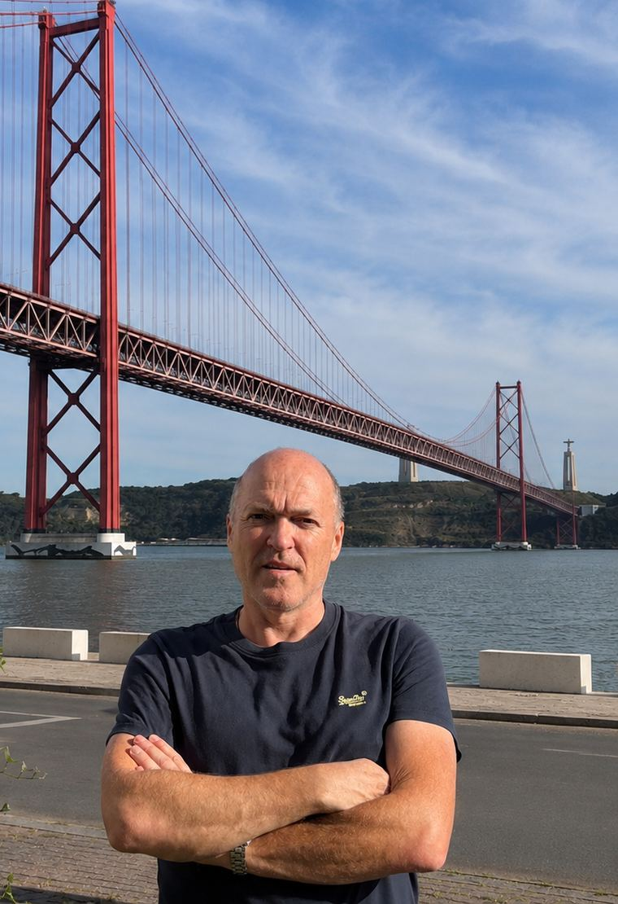
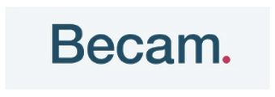
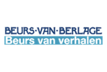

Sinds 2008 zorgt Hans Keeren dat merken gevonden worden door SEO. Nu ook door AI. Met een strategie die gebaseerd is op onderzoek en het maken van de juiste on site en off site content.
Download drie factoren die bepalen of ChatGPT jou noemt
Download cheat sheetHans Keeren is sinds 2008 SEO-specialist en kent het vak van binnenuit. Hij werkte voor grote en kleine merken, van slagerij tot multinational. Voor die bedrijven verdiende hij de afgelopen jaren meer dan 30 miljoen euro.
Vandaag de dag is hij gespecialiseerd in GEO, oftewel Generative Engine Optimization. Dat betekent dat hij zijn klanten vindbaar maakt in LLM’s zoals ChatGPT, Google AI Overviews, Google AI Modus, Claude en Perplexity.
Hans Keeren woont en werkt grotendeels in Portugal en reist regelmatig door Europa. Hij werkt vanzelfsprekend grotendeels online en op afstand.
Qonvert is het bedrijf van Hans Keeren waarmee hij sinds 2008 tot en met nu zijn SEO- en GEO-diensten uitvoerde. Qonvert is gevestigd in Portugal en werkt voor merken die de shift maken van SEO naar GEO en nog wachten op hun eerste vermelding in de LLM’s.


Meten hoe AI-modellen jouw merk nu beschrijven en waar de ruimte zit om dat te veranderen.
Uitzoeken welke vragen jouw kopers stellen aan een AI en welke merken daar nu op verschijnen.
Pagina’s schrijven en structureren zodat modellen jouw antwoord kunnen overnemen en citeren.
Zorgen dat de bronnen waar AI uit put jouw merk noemen op de plekken die tellen.